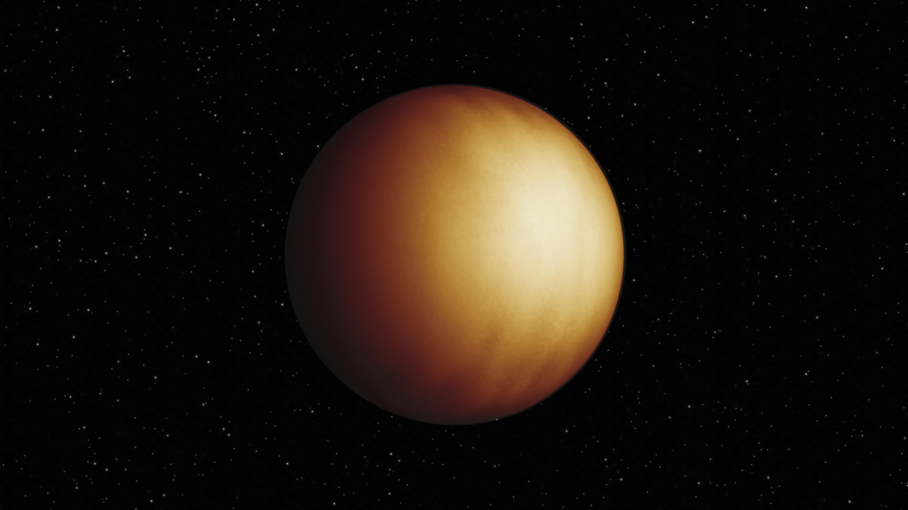
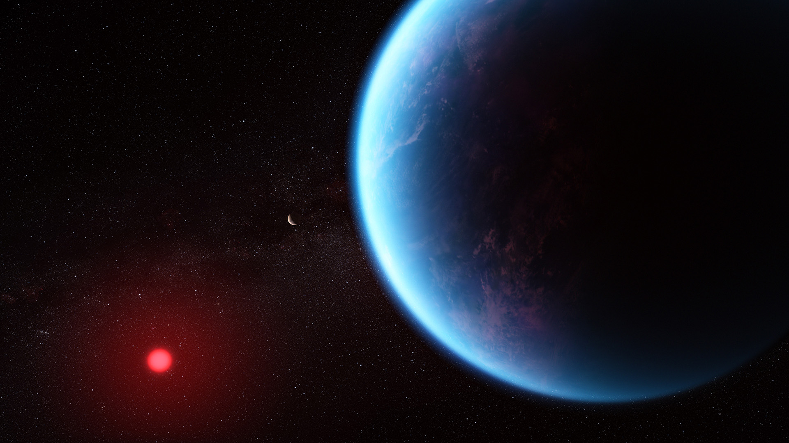

What are Exoplanets?
Exoplanets, or extrasolar planets, are planets that exist outside our solar system. They orbit stars other than the Sun and can vary greatly in size, composition, and distance from their parent stars.
Types of Exoplanets
1. Hot Jupiters

Hot Jupiters are gas giants that orbit very close to their parent stars, resulting in high temperatures. They are usually larger than Jupiter and can have short orbital periods.
2. Super-Earths
Super-Earths are exoplanets with a mass larger than Earth's but significantly smaller than that of Uranus or Neptune. They can be rocky or gaseous and may have the potential for life.
3. Mini-Neptunes

Mini-Neptunes are smaller versions of Neptune, typically with a thick atmosphere of hydrogen and helium. They are still being studied to understand their characteristics and formation.